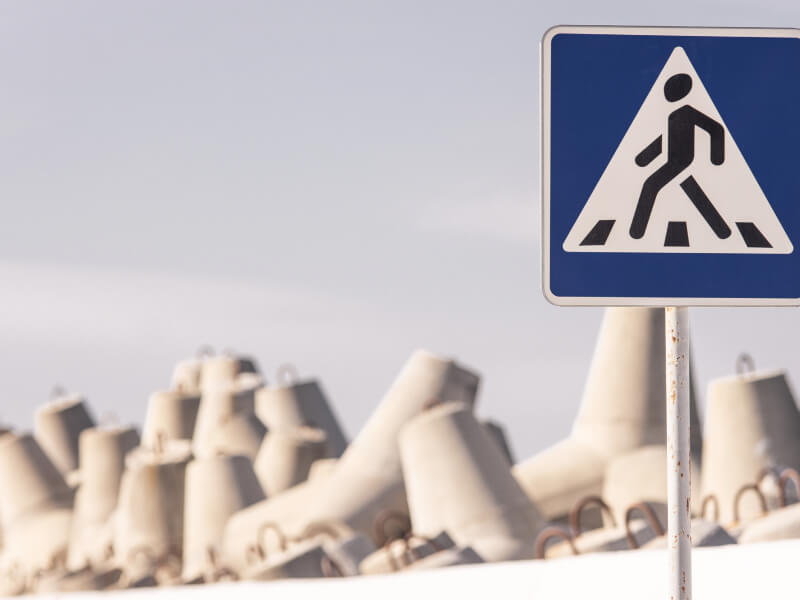
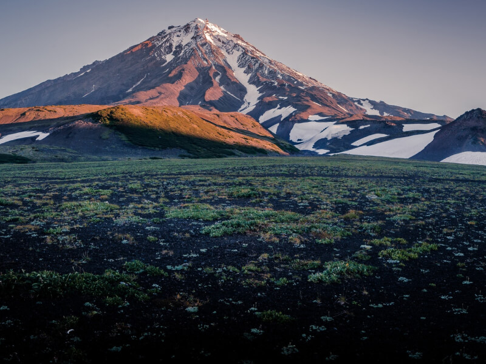
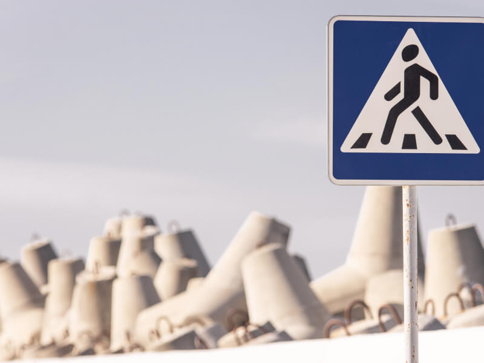
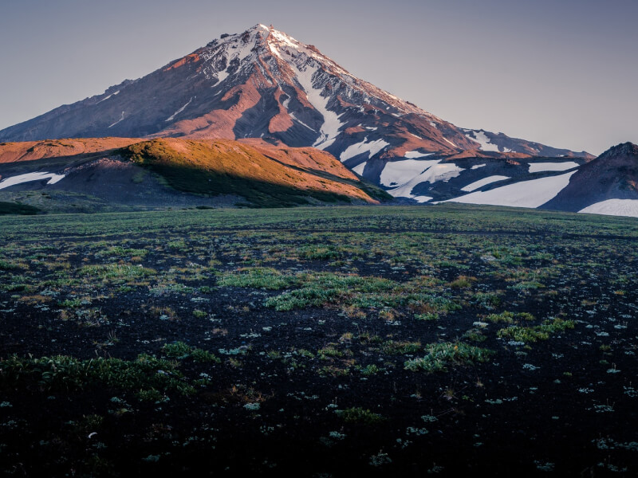
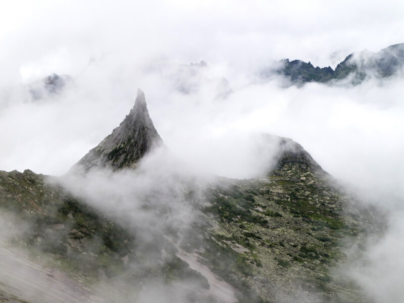
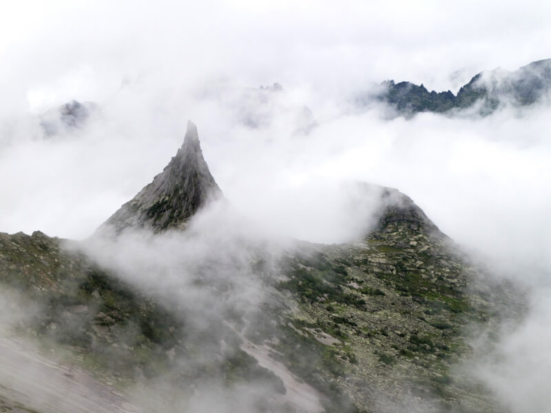

По опросам ВЦИОМ, 95% россиян мечтают куда-нибудь поехать, но только 36% планируют
провести отпуск в родной стране. Мол, чего мы тут, дома, не видели? На самом деле, Россия — это целая
вселенная с ласковым морем юга, густыми лесами Саян и суровыми льдами плато Путорана. А ещё увидеть все эти
красоты можно без миллионов на счету, загранпаспорта и многочасовых перелетов. Как, например, Вера Башмакова
— смелая молодая мама, которая взяла в охапку троих детей, усадила их в свою «Ладу» и проехала 20 тысяч
километров по родной стране. Мы выбрали и описали некоторые интересные места, достойные вашего отпуска.
Здесь, посреди лесов и песчаных дюн, вы сможете увидеть два водных
горизонта — спокойного Куршского залива с одной стороны и подёрнутого рябью волн
Балтийского моря с другой. Уникальная природная зона на краю российского анклава.
На этом Калининградская область не заканчивается. Для путешественника
и исследователя там же по соседству — самая западная точка России, Балтийская коса, — и немецкое
наследие
россыпи небольших приморских городов. Атмосфера здешних мест исключает суету, окуная в спокойствие природы
и запах стального, прохладного моря.
Почти весь полуостров находится за Полярным кругом. Саамская тундра,
от которой на юг — тайга, а на север — Ледовитый океан,
прикидывающийся Баренцевым морем.
Возможно, вы смотрели Звягинцева и даже слышали историю арктического фестиваля
в Териберке. Возможно, слово «Хибины» не осталось под снегом школьных воспоминаний об уроках географии.
Возможно, вы не интересовались пронизывающей земную кору сверхглубокой скважиной, а от апатитов вас давно
накрывает апатия. Но ваша мечта увидеть северное сияние начинает сбываться с билетом в Мурманск.
Алтай — одно из красивейших мест в России.
В первую очередь из-за гор: если ехать вдоль хребта, вы увидите склоны, усыпанные соснами,
горные реки и озёра. А если вы откроете в автомобиле окна, сможете познакомиться
с невидимым чудом здешних мест — горным воздухом.
Климат на Алтае умеренный, поэтому ехать сюда лучше всего летом. Так
вы увидите всё разнообразие местной флоры и фауны. По лесам Алтая бродят лоси, над хребтами
летают орлы, а на равнинах пасутся косули. И знаменитые манулы — тоже обитатели
Алтайского края.
Всем известен Байкал как крупнейшее озеро
в мире. Многие также знают, что это самый большой источник пресной воды и одно
из красивейших мест в России.
Конечно, это всё так. Но Байкал ещё идеальное место для соревнований по
скийорингу. Это такой вид спорта, когда лыжник привязывает себя к мотоциклу,
и тандем старается развить как можно бóльшую скорость на льду. В марте 2019 года на фестивале «Байкальская
миля» был поставлен мировой рекорд — 197.011 км/ч.
Сибирь заканчивается не на Урале, а в Карелии: образующая
тайгу сибирская лиственница не растёт западнее Водлозера. Зато здесь она вымахивает
на 30 метров — леса карельских национальных парков из-за непроходимых болот никогда
не знали топора. Некоторым соснам уже больше чем полтысячелетия. Прикоснитесь к живому существу,
видевшему солнце раньше, чем увидал его Иван Грозный.
В девственном лесу на сотню километров не встретишь тропы. А на редких тропинках
деревья
в паре метров от земли помечены медвежьими когтями. Чтобы все знали, кто тут хозяин.


 



 
